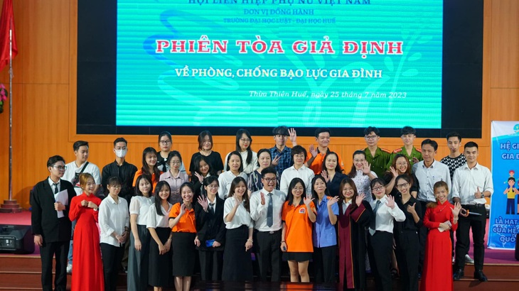

Đào tạo đại học gắn với thực tiễn là tất yếu
Lý thuyết khác xa thực tế, nhiều kỹ năng chưa được rèn luyện, công việc khó kiếm… là những thử thách nhiều sinh viên ra trường gặp phải khi theo đuổi sự nghiệp.
Sinh viên cần trang bị thêm nhiều kỹ năng khi đi xin việc
Minh Vân, trưởng phòng Nhân sự của một công ty tại Hà Nội có 5 năm kinh nghiệm trong lĩnh vực tuyển dụng, chia sẻ nhiều bạn sinh viên không đáp ứng được công việc.
"Các bạn thiếu kiến thức thực tế, chúng tôi chưa đòi hỏi nhiều về mặt kinh nghiệm mà chủ yếu đánh giá về kỹ năng, ứng dụng kiến thức trong công việc. Nhiều bạn cách trình bày một email gửi khách hàng còn chưa đạt tiêu chuẩn của một email thông thường có thưa gửi, nội dung trọng điểm…", Vân trao đổi.
Hà Lan, sinh viên năm 4 tại TP.HCM vừa trải qua kỳ thực tập ngắn tại một doanh nghiệp nhỏ về marketing, tâm sự bạn khá bỡ ngỡ với những công việc được giao dù đúng chuyên ngành học, tất cả chỉ là lý thuyết, ra thực tế khác biệt rất nhiều.
"Nếu tại trường đại học mà bọn mình được thực hành, va chạm các kỹ năng này nhiều hơn thì đi làm sẽ rất hiệu quả, không bị bối rối như này", Hà Lan nói.
Theo luật sư Lê Hồng Sơn, đại diện Công ty Luật TNHH HMS: "Chương trình đào tạo ở nhiều trường đại học hiện nay còn nặng về lý thuyết, chậm cập nhật và chưa chú trọng phát triển các kỹ năng cho sinh viên, do đó sinh viên không có nhiều cơ hội trải nghiệm công việc khi còn đi học. Đến khi ra trường, vì thế họ thiếu nhiều kỹ năng để làm việc, đặc biệt các kỹ năng mềm như kỹ năng làm việc theo nhóm, kỹ năng tổng hợp, thuyết trình...".
Lý thuyết phải đi kèm thực tiễn
Quyết định xin việc tại Đà Nẵng ở một công ty chuyên về tư vấn luật, Nguyễn Phí Quyền (23 tuổi) khá vui vẻ và hài lòng với công việc hiện tại.
"Tại trường đại học các kỹ năng bọn mình được thực hành khá kỹ lưỡng, trung tâm thực hành luật với các phiên tòa giả định, rồi ngoại khóa và câu lạc bộ về kỹ năng sống, thực tập thường xuyên tại các đơn vị về luật có liên kết với nhà trường nên khi đi làm mình không cảm thấy quá khó khăn hay bị ‘ngợp’ công việc", Quyền chia sẻ.
Phiên tòa giả định với chủ đề ‘Phòng chống bạo lực gia đình’ tại Trường đại học Luật, Đại học Huế
Nói về công tác đào tạo gắn với thực hành nghề luật, TS. Lê Thị Thảo - giám đốc Trung tâm Thực hành Luật và Khởi nghiệp trường Đại học Luật, Đại học Huế - chia sẻ để đảm bảo chất lượng đào tạo và sẵn sàng đáp ứng nhu cầu của xã hội, nhà trường đã xây dựng chương trình đào tạo luôn đổi mới và cập nhật; tăng cường công tác nghiên cứu khoa học cũng như xây dựng mạng lưới đối tác với doanh nghiệp, công ty luật và cơ quan nhà nước…
Việc này giúp sinh viên tiếp cận trực tiếp công việc ngay khi còn ngồi trên giảng đường, "học đi đôi với hành".
"Cùng với đó, rèn luyện kỹ năng mềm cho sinh viên là cần thiết trong quá trình đào tạo. Trường đại học Luật, Đại học Huế thường xuyên tổ chức các cuộc thi liên quan đến nghề luật tạo môi trường cho sinh viên cơ hội rèn luyện kiến thức, kỹ năng thuyết trình, hùng biện, lập luận, tranh luận… như cuộc thi ‘Tài năng nghề luật’, ‘Sinh viên với Pháp luật Sở hữu trí tuệ’, ‘Hùng biện luật gia’, ‘Ý tưởng khởi nghiệp đổi mới sáng tạo’…", TS. Thảo chia sẻ thêm.
Trong bối cảnh hiện nay, yếu tố cốt lõi của việc xây dựng hệ thống giáo dục đại học đó là đào tạo gắn liền với yêu cầu thực tiễn, đào tạo đáp ứng tốt hơn nhu cầu của xã hội. Phát triển mô hình đào tạo gắn kết giữa nhà trường với doanh nghiệp được xem là yêu cầu quan trọng được đặt ra.
Nguồn: Tuổi Trẻ
Xem bài viết gốc